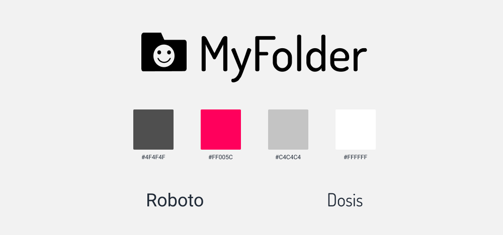
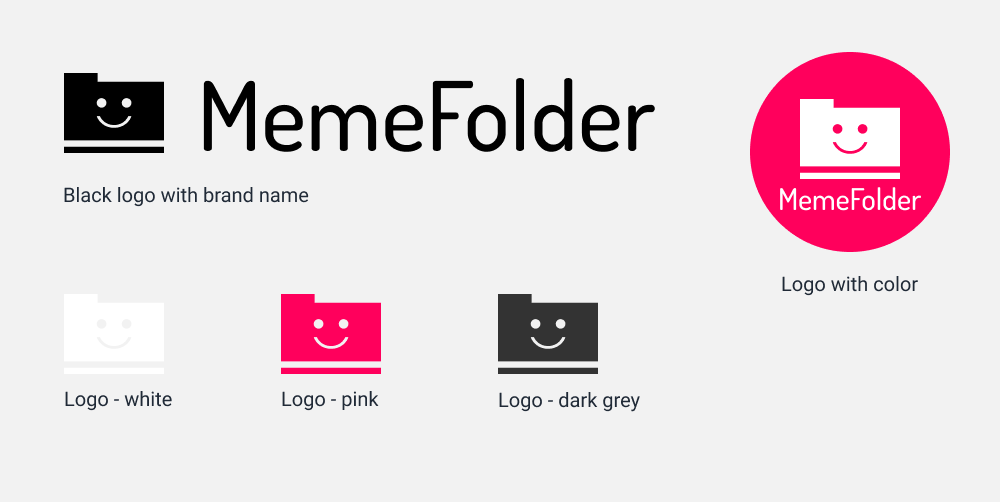

DESIGN ROLES
- UX Design
- Research
- Visual Design
- Brand & Identity
DELIVERABLES
- User Surveys
- Personas
- User Stories
- User Flow
- Competitive Analysis
- Wireframes
- Style Guide
- User Testing
- User Research
- Prototype
TOOLS
- InVision
- Adobe Photoshop
- Figma
- Google Surveys
- Peek User Testing
- Usability Hub
- Google Form Surveys
OVERVIEW
When this project started, I was asked to build a cloud storage program
that allowed users to the following things:
- Save content from the internet
- Organize content
- Create content or uploading files from a hard drive
- Share items from the cloud to other people and collaborate
There was not a lot of specific directives to follow regarding this
process outside the objectives stated above. However, after going
through several different iterations of the possible directions for this
program’s brand, I decided on MemeFolder, a program that allows users to
save image reactions and gifs from the internet and organize them into
folders. It also allows users to edit image files so that they can
create their own memes, as well as share them with friends.
PROBLEM
I got my inspiration for this program from two places:
- A viral image which shows an individual struggling to find an image
reaction due to their highly disorganized and overcrowded folder, and
- Under viral twitter tweets, users would respond with humerous gifs,
and other users would request for the original poster to share how they
found that gif.
The MemeFolder should allow users to address both
problems, which appear to happen rather frequently online.
For many Millennial users, social media is an integral part of their
lives, and as such it becomes necessary to be knowledgeable of meme
culture as a visual style of communication. Considering the
proliferation of meme formats available, it can become frustrating for
users to find and keep track of existing memes in their phones or
desktop; it can also be equally frustrating for users who are unable to
find the memes or gifs that they want, as there is no easy way to easily
get these image files directly from social media sites.
USER SURVEY
The user survey was created before the branding was established. I
wrote the questions assuming that I will be creating a generic cloud
storage program. The results I got from the people who completed the
survey went as follows:
80% of users have a cloud storage
The most common reasons why people use a cloud storage is:
- For work/school - 85.7%
- Personal reasons - 71.4%
- Collaboration and file sharing - 64.3%
When asked what features they rely on, 82.1%
of users:
- Upload files to backup data
- Upload files for easy access between devices
- File sharing with friends/colleagues
Majority of people surveyed are
Millennials or
Generation Z.
My intention was to create a cloud storage that addressed the
aforementioned issues, which is evident in early prototypes. However,
the idea for the meme editing feature came because
100% of the surveyed
users are active participants of social media.
USER PERSONA
User personas were created based on the results from the survey. My
users were profiled after the Facebook controversy and how they violated
user privacy, which affected how they responded to the questions.
AZUL
reluctant user
- Age: 33 years
Sex: Female
Occupation: Medical Interpreter
Location: Yucatan, MX
- MOTIVATIONS:
An avid nature lover, Azul first started using cloud storages so
that she can enjoy the outdoors while doing her homework on Google Drive
from her phone. While she is currently an infrequent user now that she
has left her college years, Azul seems to be motivated by the
convenience that cloud storages can give her, and the freedom of
movement so that she can do her work wherever she wants.
- GOALS:
- Save her writing and pictures
- Share files with friends
- Backing up important personal data
- FRUSTRATIONS:
- Inability to trust how the companies managing cloud storages use
people’s personal information
- Lack of ethics in large companies like Google and Facebook
- Inability to personalize/accessorize cloud storages
- BIOGRAPHY:
Azul lives with her cat in Mexico. An introvert with social anxiety,
she is an avid user of social media, which she relies on to make
connections with online communities. She is passionate about social
justice and has a strong sense of ethics and morality. On her time
off, she loves playing the ukelele and singing songs, as well as
reading and writing.
CHARLENE
ethical pragmatist

- Age: 22 years
Sex: Non-Binary
Occupation: Student
Location: Lawndale, CA
- MOTIVATIONS:
Charlene primarily uses cloud storage to do their school work as a
college student, as well as for their part time job as a college
student assistant. They find that using the file sharing feature to
collaborate with their classmates makes doing work much more
convenient. However, they express wariness regarding the information
that companies like Google collects about their personal life, and
would like to see tech creators be more ethical about how they create
new products.
- GOALS:
- Using file sharing features for collaborative reasons in school
- Backing up personal data
- Saving old, sentimental pictures
- FRUSTRATIONS:
- Fear of being unable to control the data put in cloud
- Distrust towards tech industries, and how it can infringe on an
individual’s personal liberties
- Tech being inaccessible for people who come from underprivileged
backgrounds
- BIOGRAPHY
Charlene lives with their mother, sister, and brother. They are fond
of playing games on their Nintendo Switch, and likes to hang out with
friends, read books, and knit in their spare time. They are an avid
user of technology, and use it daily for things such as social media
and listening to music.
USER STORIES

USER FLOW

COMPETITIVE ANALYSIS
I chose Google Drive and Dropbox, which are two of the most popular
cloud storage devices. I also chose to compare it with Amazon Drive,
as it is an atypical cloud storage device that sells photo albums based
on the pictures that users upload to this device. I wanted something
unusual to compare with more traditional cloud storages to see how it
would do in comparison.
- This is the most popular cloud storage among the users surveyed, and
among the most user friendly. Google Drive has file editing programs and
allows for real time collaboration between different users.

- Dropbox is another widely used cloud storage, and is especially popular
for businesses. They do have problems with security, as well as with
syncing, which results in duplicate files.
- Amazon Drive is not as widely used, though it comes from a strong
brand. While user interface is not as friendly, its primary purpose in
selling photographic memorabilia could attract a niche market.
WIREFRAMES
The wireframes for the initial design were made based on a protytpe
called MyCloud, which was the first iteration of this project.
BRANDING
The style guide went through three iterations as I developed the brand
for this cloud storage device.
The first iteration was called
MyCloud, which was a generic device that
allowed users to upload files and organize them in folders, as well as
share them with friends. It offered one file editing program, which
allowed users to edit pictures and make their own memes, in deference to
the Millennials/Gen Z majority that took my survey. After completing the
prototype, I realized that I should commit to this direction, and
rebranded my program.
This resulted in the second iteration
MyFolder, which is a cloud
storage specifically made to collect and organize memes, gifs, and
reaction images, mostly for the purpose of social media. This is an
app-only program also allows users to create their own memes and share
it with friends.
After making more changes to the brand, I came up with
MemeFolder in
the third iteration. It has the same functionality as MyFolder, but with
minor changes in the logo and color scheme.
STYLE GUIDE
In this section, I’ve included the style guides for all three
iterations of the program.
For the MyCloud
iteration, I created the following logo and the color
scheme that was to go with it, as well as the chosen font:

I went with blue and yellow to convey the sky to match the cloud brand,
and included darker red and green to give the program a neutral
appearance since I believed the aforementioned colors to be too bright.
For the font, I went with Righteous for the rounded edges to match the
curves in the logo.
For the MyFolder
iteration, I created the folowing logo and color
scheme, as well as the chosen font:

I chose more dramatic colors to catch the eyes of a younger audience,
focusing primarily on the contrast between dark grey and pink. I also
chose Dosis for the logo’s font, as its much narrower appearance gives
it a sleeker and more modern look. The change in the logo, a smiley face
superimposed on a folder, is a reflection of how users will be able to
pull image reactions from this folder in order to convey their emotions
on social media.
For the MemeFolder
iteration, I created the following logo and color
scheme, as well as the chosen font:

I made minor changes to the logo to make it look minimalistic without
appearing to be childish, and added different variations of what it
could look like under different cirumstances. There is also minor color
changes, as I chose a marginally darker grey to provide a greater
contrast with the pink. The fonts have remained unchanged.
USER TESTING
In this section, I’ve included the user testing for all three
iterations of the program.
For the MyCloud
iteration, I meant to create a desktop version with a
mobile app. In the intial testing, I looked at different preferences
users have with how the columns are positioned and whether the stars
should be located before or after the name of the file. In the result of
the preference test, people preferred a narrow left hand column and the
star located before the file name.
In the MyFolder
iteration, I
changed direction to create an app only version. The program initially
had a bar at the bottom of the screen and app settings in the side bar.
This was, however, an inconvenient design, and after running a test I
ended up removing both and putting the features in the side bar instead.
In the MemeFolder
iteration, I kept the integrity of the app, but
changed the logo and made minor adjustments to the color scheme. Having
recieved feedback that the logo at the time was not very aesthetically
pleasing, I made adjustments to improve its appearance.
PROTOTYPE
The completed prototype for the MemeFolder app can be found here:
In conclusion, the MemeFolder app is a personalized product that is
geared to suit individual users. This is geared towards Millennials who
can use it to save and create memes, which is an important part of
social media culture. It is easy to use, and offers features that is
useful to the average user.